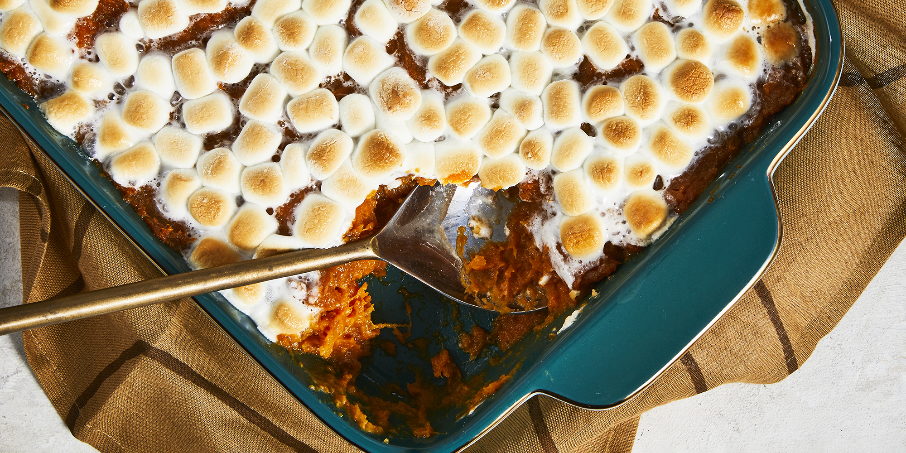

Candied Sweet Potatoes

Description
A delicious, sweet version of candied sweet potatoes.
Ingredients
- 4 pounds sweet potatoes, quartered
- 1 ¼ cups margarine
- 1 ¼ cups brown sugar
- 3 cups miniature marshmallows, divided
- ground cinnamon to taste
- ground nutmeg to taste
Steps
- Preheat oven to 400 degrees F (200 degrees C).
- Grease a 9x13 inch baking dish.
- Bring a large pot of water to a boil.
- Add potatoes and boil until slightly underdone, about 15 minutes.
- Drain, cool and peel.
- In a large saucepan over medium heat, combine margarine, brown sugar, 2 cups marshmallows, cinnamon and nutmeg.
- Cook, stirring occasionally, until marshmallows are melted.
- Stir potatoes into marshmallow sauce.
- While stirring mash about half of the potatoes, and break the others into bite-sized chunks.
- Transfer to prepared dish.
- Bake in preheated oven for 15 minutes.
- Remove from oven and cover top evenly with remaining marshmallows.
- Return to oven and bake until marshmallows are golden brown.